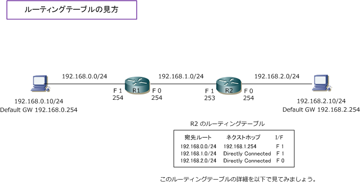
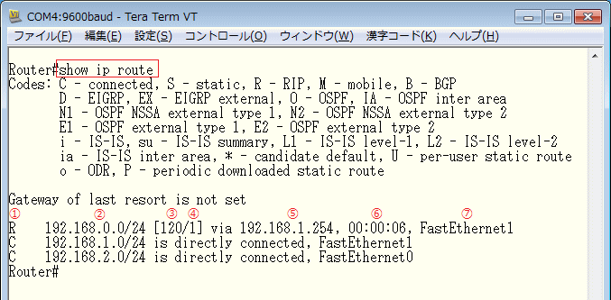

Routing Table
ルーティングテーブルへのルート情報の追加
ルータのルーティングテーブルにルート情報を追加するためには、以下の3通りの方法があります。
| ルート情報の追加方法 | 説明 |
|---|---|
| 直接接続ルート | ルータの自身のI/FにIPアドレスを設定して、I/Fを有効化することで追加されるルートのこと。 前提として、そのインターフェースがリンクアップして "up/up" の状態である必要がある。 |
| スタティックルート | 管理者が宛先ネットワークへの最適なルートを手動で設定したルートのこと。 |
| ダイナミックルート | ルータで設定されたルーティングプロトコルにより、自動的に追加されるルートのこと。 |
ルーティングテーブルの見方
ここではCisco機器を例にして、ルーティングテーブルを詳細に見ていきます。Cisco機器でルーティング テーブルを確認するためには、show ip routeコマンドを入力する必要があります。


| 項番 | 各項目 | 説明 |
|---|---|---|
| ?@ | ルートの情報源 | そのルートがどのようにルーティングテーブルに追加されたのかを示すコード。 直接接続ルートの場合「 C 」、スタティックルートの場合「S」、ダイナミック ルートの場合はルーティングプロトコルによりコードが異なる。今回はルータで RIPを有効にしているので、ルーティングテーブル上では「R」が表示されている。 |
| ?A | 宛先ルート、サブネットマスク | 宛先ネットワークを示すアドレスとサブネットマスクの情報。サブネットマスクは ネットワークアドレスの区切りを示し、ロンゲストマッチの際に参照される情報源。 |
| ?B | アドミニストレーティブ ディスタンス |
ルーティングテーブル上に、プレフィックス長が同じ宛先ルートが複数ある場合 このアドミニストレーティブディスタンス(AD)の値が参照される。AD値が小さい 宛先ルートがルーティングテーブルに追加される。RIPは、AD値が 120 となる。 |
| ?C | メトリック | ダイナミックルーティングにおいて、宛先ルートに対し複数のルートが存在する 場合に最適経路を選択するために使用される値。このメトリック値は、使用して いるダイナミックルーティングプロトコルにより値の意味が異なる。 |
| ?D | ネクストホップアドレス | 受信したパケットを宛先ネットワークに転送するために次にパケットを転送する 隣接ルータのIPアドレスのこと。今回は、192.168.0.0/24の宛先ルートに対しては 192.168.1.254がネクストホップアドレスであることが分かる。viaは「～経由」の 意味であり、192.168.1.254経由で192.168.0.0/24のルートが学習されたと分かる。 directly connected は直接接続ルートであることからネクストホップは存在しない。 |
| ?E | 宛先ルートの学習時間 | ダイナミックルーティングにおいて、宛先ルートが追加されてからの経過時間。 上図の場合、「192.168.0.0/24」のルート情報を受信してから6秒経過している。 |
| ?F | 出力インターフェース | 受信パケットを宛先ネットワークに転送するための出力インターフェースを表示。 上図「192.168.0.0/24」宛のパケットはR2の「FastEthernet 1」から転送される。 |
ネットワークエンジニアにとってCiscoルータの show ip route が確認できることは超必須なことなので、しっかり理解しましょう。